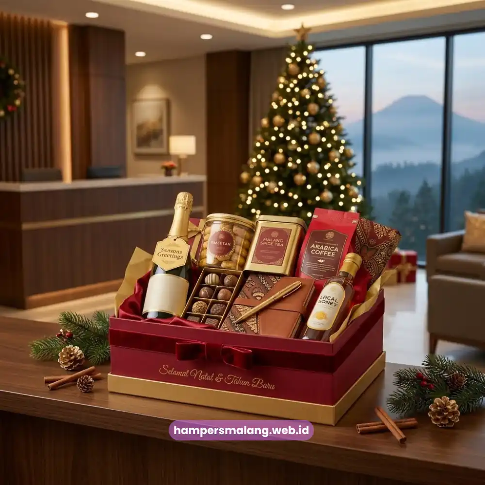
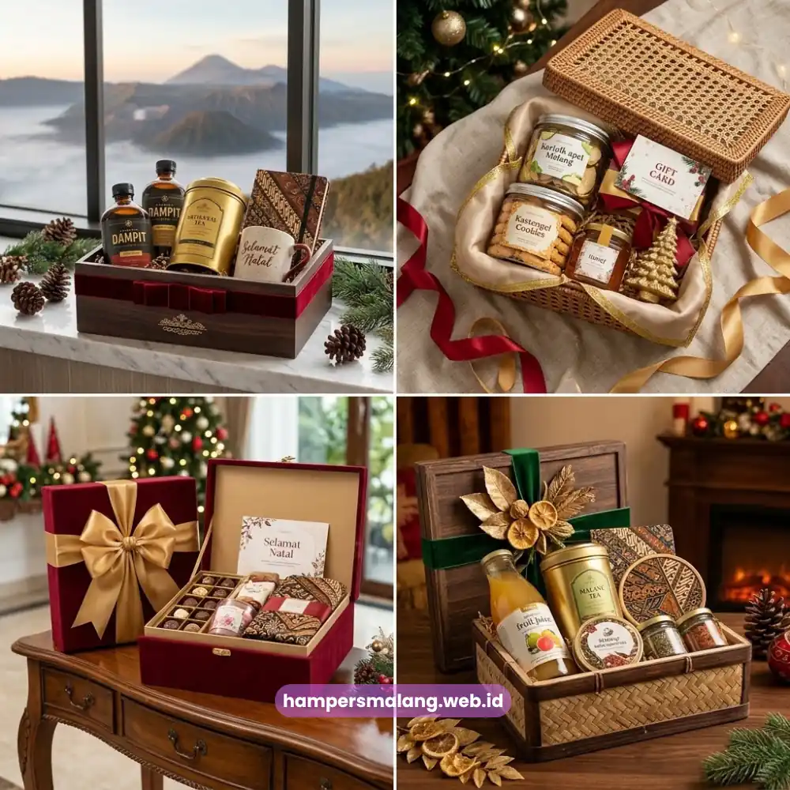

Hampers Natal kantor terbaik di Malang adalah paket parsel yang memadukan desain elegan, isi berkualitas, dan kemasan rapi untuk mempererat hubungan dengan karyawan maupun klien.
Perusahaan di Malang kini semakin selektif memilih hampers yang benar-benar mencerminkan citra profesional, bukan sekadar bingkisan formalitas akhir tahun.
Momen Natal menjadi kesempatan strategis bagi divisi HR maupun manajemen untuk menyampaikan apresiasi sekaligus memperkuat loyalitas tim dan relasi bisnis.
Musim Natal selalu identik dengan tradisi berbagi, dan di lingkungan korporat, tradisi ini diwujudkan lewat hampers yang dikirimkan ke karyawan, mitra kerja, hingga klien penting.
Namun tidak semua hampers layak mewakili nama perusahaan Anda. Artikel ini membahas secara menyeluruh bagaimana memilih hampers Natal kantor di Malang yang benar-benar elegan, berkesan, dan sesuai anggaran.
- Hampers Natal korporat berfungsi sebagai representasi citra dan apresiasi perusahaan.
- Kualitas kemasan dan isi menentukan kesan yang diterima penerima.
- Malang menawarkan banyak pilihan produk lokal premium yang cocok dijadikan isi hampers.
- Pemesanan dalam jumlah besar memerlukan perencanaan waktu dan koordinasi vendor yang matang.
- Hampers Malang siap membantu perusahaan menyiapkan hampers Natal secara praktis dan tepat waktu.
Apa Itu Hampers Natal Korporat dan Mengapa Penting bagi Kantor di Malang?
Hampers Natal korporat adalah paket bingkisan yang disusun khusus atas nama perusahaan untuk dibagikan kepada karyawan, klien, atau mitra bisnis pada perayaan Natal.
Berbeda dengan hampers pribadi, hampers korporat biasanya disesuaikan dengan identitas brand, mulai dari warna kemasan hingga pemilihan kartu ucapan resmi.
Bagi perusahaan yang beroperasi di Malang, memberikan hampers Natal bukan sekadar tradisi tahunan, melainkan investasi hubungan jangka panjang.
Investasi Hubungan Jangka Panjang
Karyawan yang merasa dihargai cenderung memiliki keterikatan kerja yang lebih baik, sementara klien yang menerima hampers berkualitas akan mengasosiasikan pengalaman positif tersebut dengan reputasi perusahaan Anda.
Di tengah persaingan bisnis yang semakin ketat, detail sekecil ini sering kali menjadi pembeda yang diingat lebih lama dibandingkan pesan pemasaran konvensional.
Kriteria Hampers Natal Kantor yang Elegan dan Berkualitas
Hampers Natal kantor yang elegan harus memenuhi tiga aspek utama, yaitu tampilan kemasan yang rapi, isi yang relevan dengan penerima, dan konsistensi dengan citra perusahaan.
Ketiga aspek ini saling melengkapi untuk menciptakan kesan profesional yang utuh.
Kemasan, Isi, dan Konsistensi Brand
Pertama, dari sisi kemasan, pilihlah desain yang bersih dan tidak berlebihan. Warna-warna natal klasik seperti merah marun, hijau tua, emas, dan krem masih menjadi favorit karena memberi kesan hangat namun tetap formal.
Kedua, dari sisi isi, sebaiknya hindari produk yang terlalu personal atau berisiko tidak sesuai preferensi penerima produk konsumsi berkualitas dan barang fungsional cenderung lebih aman dan diterima secara luas.
Ketiga, konsistensi identitas brand pada kemasan, seperti penempatan logo yang proporsional, akan membuat hampers terasa lebih resmi tanpa terkesan seperti media promosi murahan.
Elemen lain yang tidak kalah penting adalah ketepatan waktu pengiriman. Hampers yang datang terlambat, meski isinya premium, akan mengurangi nilai apresiasi yang ingin disampaikan.
Oleh karena itu, perencanaan pemesanan sejak awal Desember sangat disarankan agar proses produksi dan distribusi berjalan lancar, terutama untuk pemesanan dalam skala besar.
Mengapa Memilih Hampers Natal dari Malang untuk Kebutuhan Korporat?
Malang dikenal memiliki kekayaan produk lokal berkualitas, mulai dari camilan olahan buah, kopi khas dataran tinggi, hingga kerajinan tangan yang bernilai estetika tinggi.
Kombinasi ini menjadikan hampers asal Malang memiliki nilai cerita yang lebih kuat dibandingkan hampers generik dari kota lain.

Efisiensi Waktu dan Fleksibilitas Vendor
Selain faktor produk, kedekatan lokasi produksi dengan area distribusi di Malang Raya turut mendukung efisiensi waktu pengiriman, terutama untuk perusahaan dengan jumlah penerima yang besar.
Vendor lokal yang memahami karakter korporat di Malang juga cenderung lebih fleksibel dalam menyesuaikan konsep hampers sesuai kebutuhan spesifik perusahaan, baik dari sisi anggaran maupun tampilan.
Bagi perusahaan yang ingin memberikan sentuhan lokal sekaligus tetap tampil elegan, memadukan produk khas Malang dengan kemasan modern adalah strategi yang semakin diminati.
Pendekatan ini tidak hanya memperkuat kesan personal, tetapi juga secara tidak langsung mendukung pelaku usaha kecil dan menengah di wilayah setempat.
Berapa Kisaran Investasi untuk Hampers Natal Kantor di Malang?
Kisaran harga hampers Natal kantor umumnya bervariasi tergantung pada jenis isi, ukuran kemasan, dan tingkat kustomisasi yang diminta.
Secara umum, harga akan dipengaruhi oleh kombinasi antara kualitas produk di dalamnya dan kompleksitas desain kemasan yang dipilih.
Perusahaan dengan anggaran terbatas biasanya memilih paket sederhana dengan isi camilan dan kartu ucapan, sementara perusahaan yang ingin memberikan kesan lebih eksklusif kepada klien penting cenderung menambahkan produk premium seperti kopi specialty atau merchandise custom.
Baca Juga: Kisaran Investasi Hampers Korporat Pemesanan Massal
Bagaimana Cara Memesan Hampers Natal untuk Kantor dalam Jumlah Besar?
Pemesanan hampers Natal dalam jumlah besar memerlukan koordinasi yang lebih terstruktur dibandingkan pembelian individu.
Langkah pertama yang perlu dilakukan adalah menentukan jumlah penerima secara pasti, karena hal ini akan memengaruhi kapasitas produksi dan estimasi waktu pengerjaan.
Komunikasi Konsep dan Personalisasi
Setelah jumlah ditentukan, perusahaan sebaiknya mendiskusikan konsep hampers, termasuk tema warna, jenis isi, dan kebutuhan personalisasi seperti logo atau nama penerima.
Komunikasi yang jelas sejak awal akan meminimalkan revisi di tengah proses produksi.
Untuk kebutuhan personalisasi lebih lanjut, seperti pencetakan logo perusahaan pada kemasan, Anda dapat membaca ulasan lengkapnya pada artikel hampers Natal custom logo perusahaan.
Terakhir, pastikan jadwal pengiriman disesuaikan dengan rencana distribusi internal perusahaan, baik untuk dibagikan langsung di kantor maupun dikirim ke alamat klien di berbagai lokasi.
Kesalahan Umum saat Memilih Hampers Natal Kantor
Salah satu kesalahan yang sering terjadi adalah memesan hampers terlalu mendekati hari H, sehingga pilihan produk dan slot produksi menjadi terbatas.
Kesalahan lain adalah kurang memperhatikan daya tahan isi hampers, terutama produk berbahan dasar makanan yang memerlukan perhatian khusus pada kondisi penyimpanan dan masa simpan.
Selain itu, beberapa perusahaan cenderung memilih isi hampers berdasarkan selera pribadi tim internal tanpa mempertimbangkan preferensi umum penerima, yang berisiko membuat hampers terasa kurang relevan.
Ketidakkonsistenan tampilan kemasan dengan identitas perusahaan juga sering luput dari perhatian, padahal detail ini penting untuk menjaga kesan profesional secara menyeluruh.
Hampers Natal kantor yang elegan lahir dari kombinasi perencanaan matang, pemilihan isi yang relevan, dan kemasan yang mencerminkan identitas perusahaan.
Malang menawarkan kekayaan produk lokal yang dapat memperkuat nilai cerita hampers Anda sekaligus menjaga kesan eksklusif di mata karyawan dan klien.
Tanya Jawab Seputar Hampers Natal Kantor Malang
Hampers Natal korporat dirancang khusus mewakili identitas perusahaan, biasanya dengan kemasan bertema brand dan kartu ucapan resmi, sedangkan hampers biasa lebih bersifat personal tanpa unsur representasi institusi.
Waktu ideal adalah sejak awal hingga pertengahan Desember agar proses produksi, personalisasi, dan distribusi dapat berjalan tanpa terburu-buru, terutama untuk pesanan dalam jumlah besar.
Ya, isi hampers dapat disesuaikan mulai dari paket sederhana hingga paket premium sesuai anggaran dan tujuan pemberian, baik untuk karyawan internal maupun klien eksternal.
Bisa, terutama jika perusahaan memiliki data alamat penerima yang lengkap sejak awal, sehingga proses distribusi ke berbagai lokasi dapat direncanakan secara efisien.
Pastikan warna kemasan, penempatan logo, dan pilihan kartu ucapan konsisten dengan identitas visual perusahaan agar kesan profesional tetap terjaga.

Butuh Hampers Perusahaan?
Solusi Hampers & Corporate Gift Kreatif di Jawa Timur.
Ditulis oleh Tim Maroon Souvenir
Sahabat mahasiswa dan pelaku bisnis di Malang Raya. Berpengalaman menangani merchandise event kampus, instansi pemerintahan, dan hotel berbintang di Batu.